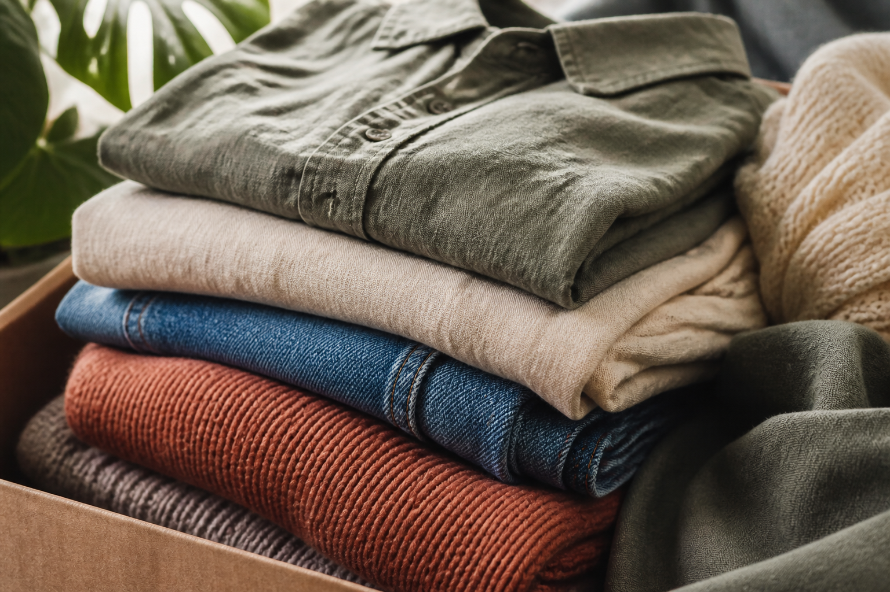
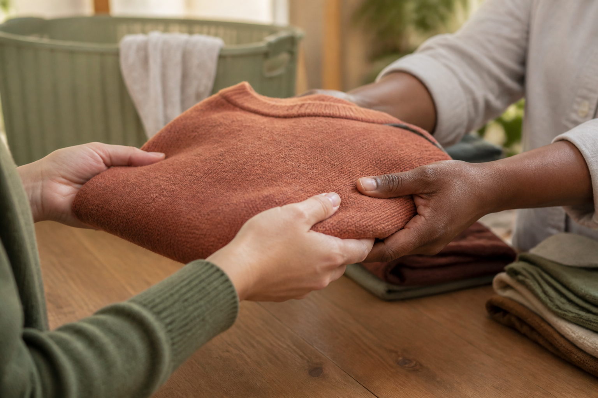
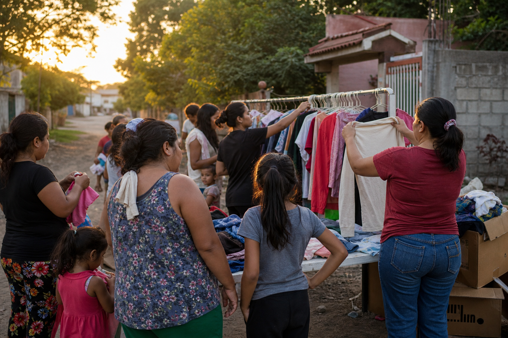

Moderna y limpia
Interfaces de moda sostenible de alto nivel: calma, espacio y claridad. Nada estridente.
Esperanza vegetal, confianza de piedra y calidez de arcilla. Una marca que se siente humana antes que tecnológica.
Moderna y limpia
Interfaces de moda sostenible de alto nivel: calma, espacio y claridad. Nada estridente.
Profunda y humana
El impacto social se cuenta con cercanía, no con culpa. La acción se siente fácil y gratificante.
Display / 700 / −0.02em
Dale una segunda vida a la moda
Título de sección / 600
Tu ropa puede cambiar realidades
Cuerpo / 400
Sans-serif moderna, alta x-height y terminales redondeados. Legible con una sola mano, en pantallas chicas, sin perder calidez.
La ropa es el centro, siempre en un contexto humano. Texturas de lino, papel reciclado y gestos reales — no stock sonriente.


